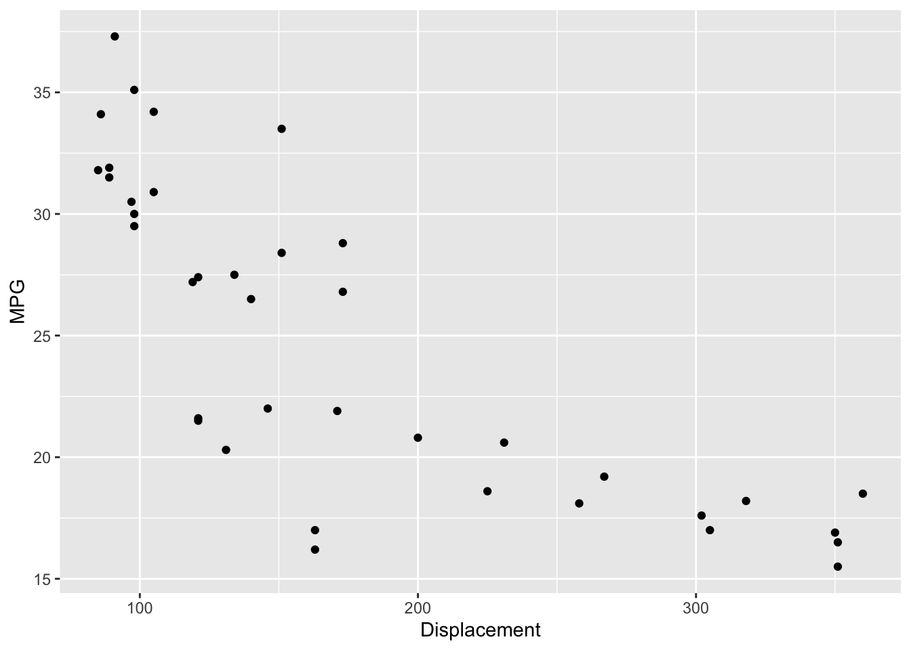
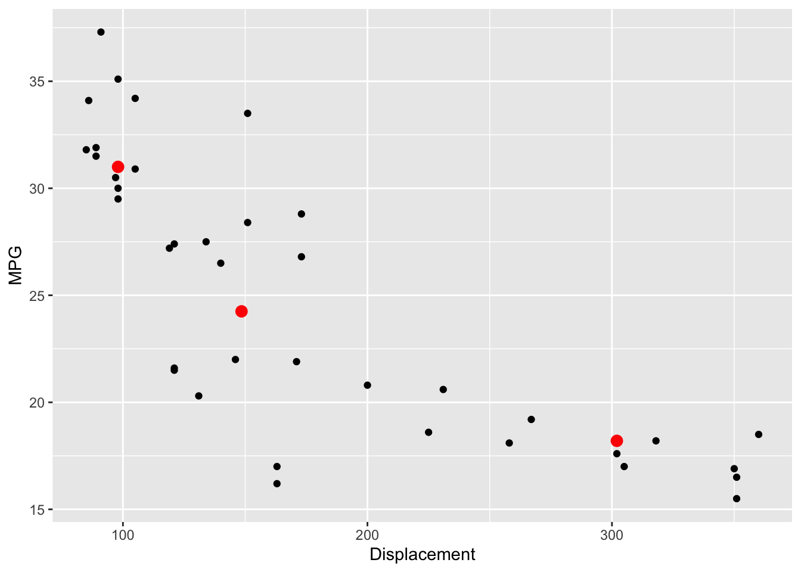
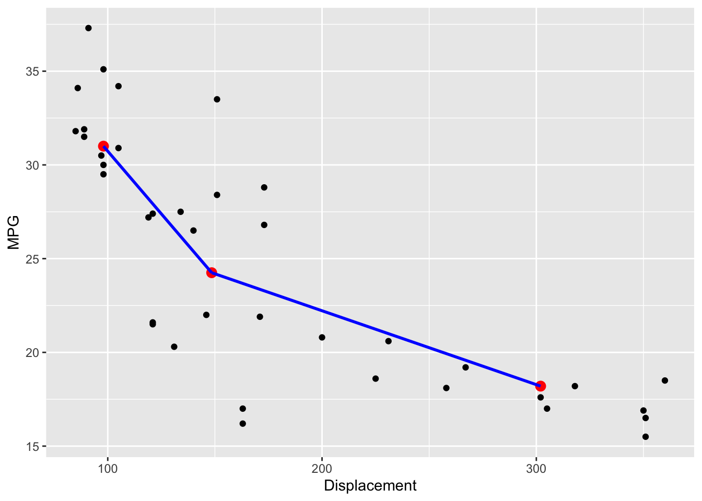
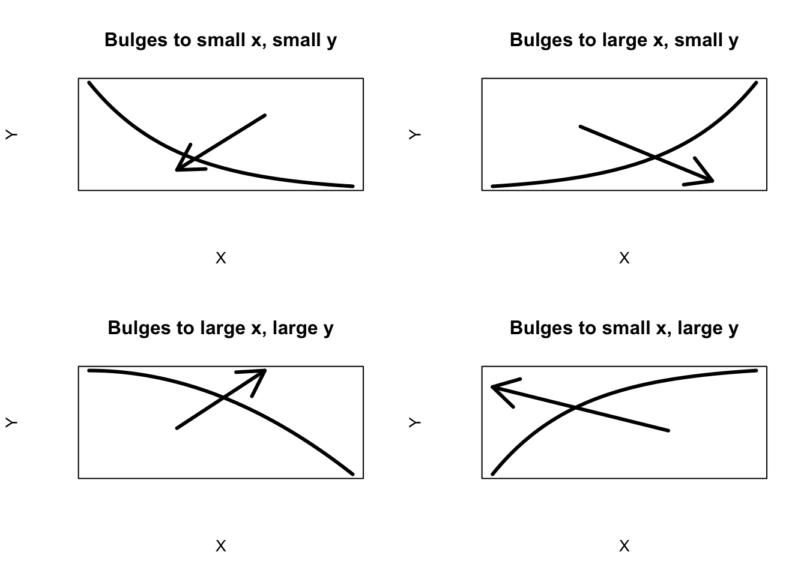
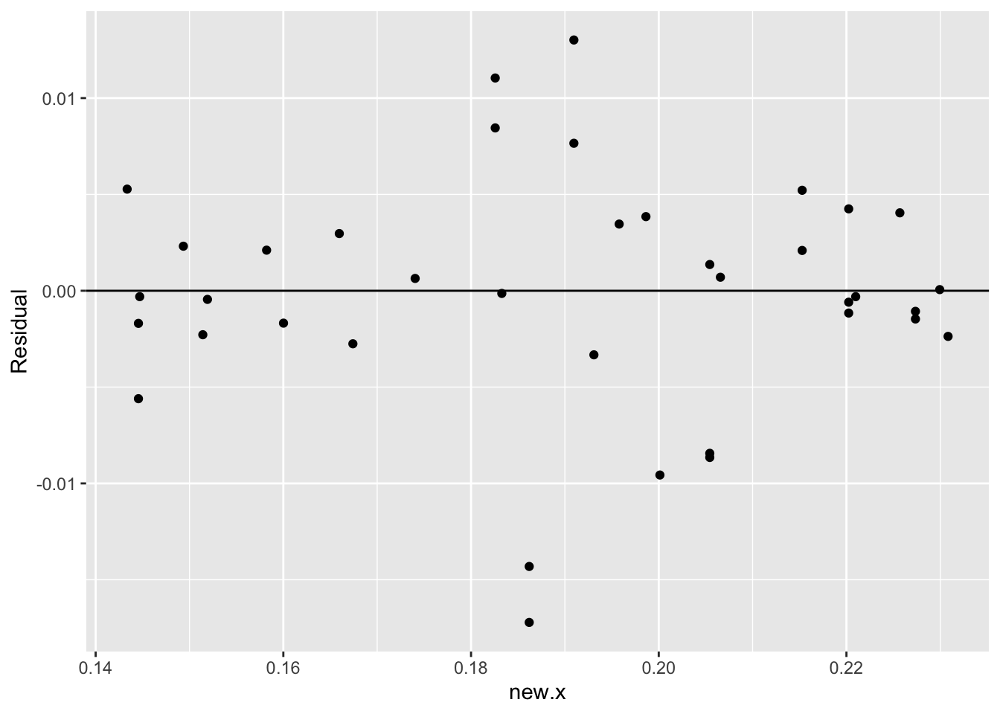

15 Straightening
We have talked about methods for working with \((x, y)\) data. First we graph the data to explore the relationship between \(x\) and \(y\), next we fit a simple line model to describe the relationship, and then we look at the residuals to look for finer structure in the data. In our U.S. population example, we saw that there may be a non-linear relationship in the plot, and we transformed the \(y\) variable (population) to first straighten the plot before we fit a line. In this lecture, we further discuss the situation where a non-linear pattern exists in the scatterplot, and discuss how we can reexpress the \(x\) and/or the \(y\) variables to make the pattern straight.
15.1 Meet the data
We work with a ``golden oldie” dataset – this is a dataset that has been used in the statistics literature to illustrate transforming data. This data is a nice illustration of a nonlinear relationship. The transformation of the \(x\) and \(y\) variables in this example suggests that the data may not have been measured in the most convenient scale.
A number of measurements were made on 38 1978-79 model automobiles. (Data was supplied by Consumer Reports and was used in the article “Building Regression Models Interactively.” by H. V. Henderson and P. F. Velleman (1981), Biometrics, 37, 391-411.)
For each car, we measure (1) the nationality of the manufacturer, (2) the name, (3) the mileage, measured in miles per gallon (MPG), (4) the weight, (5) the drive ratio, (6) the horsepower, (7) the displacement of the car (in cubic inches), and (8) the number of cylinders. The data follow:
library(LearnEDAfunctions)
library(tidyverse)
head(car.measurements)## Country Car MPG Weight Drive.Ratio Horsepower
## 1 U.S. Buick_Estate_Wagon 16.9 4.360 2.73 155
## 2 U.S. Ford_Country_Squire_Wagon 15.5 4.054 2.26 142
## 3 U.S. Chevy_Malibu_Wagon 19.2 3.605 2.56 125
## 4 U.S. Chrysler_LeBaron_Wagon 18.5 3.940 2.45 150
## 5 U.S. Chevette 30.0 2.155 3.70 68
## 6 Japan Toyota_Corona 27.5 2.560 3.05 95
## Displacement Cylinders
## 1 350 8
## 2 351 8
## 3 267 8
## 4 360 8
## 5 98 4
## 6 134 415.2 A nonlinear relationship
Here we explore the relationship between a car’s mileage and it’s displacement. Now most of us are aware of a relationship – smaller cars generally get better gas mileage. Our goal here is to describe the relationship between size and mileage and look for cars that deviate from this general pattern.
We plot mileage against displacement below.
ggplot(car.measurements,
aes(Displacement, MPG)) +
geom_point()
As expected, we see a pretty strong negative relationship. But what is evident is that this is not a straight-line relationship. Rather it looks curved – a curve drawn through the points makes this clear.
ggplot(car.measurements,
aes(Displacement, MPG)) +
geom_point() +
geom_smooth(method = "loess", se = FALSE)
Recall what we did in our U.S. population study when we detected a curved relationship between population and year. We reexpressed the population using a log transformation and fit a line to the (year, log pop) data. We follow a similar strategy here. The difference is that we may reexpress the \(x\) and/or the \(y\) variables, and we use the family of power transformations (using different choices for the power \(p\)) in our reexpression.
15.3 Three summary points and measuring curvature
Recall that our method of fitting a line, the resistant line, is based on working with three summary points. Likewise, we use three summary points to measure the curvature in the plot and help us choose an appropriate reexpression to straighten.
As before, we find three summary points by breaking the \(x\)-values (here \(x\) is displacement) into three groups of approximate equal size (low, middle, and high), and finding the median \(x\)-value and the median \(y\)-value in each group. Here the three summary points are \[ (x_L, y_L) = (98, 31), (x_M, y_M) = (148.5, 24.25), (x_R, y_R) = (302, 18.2). \] These points are plotted as red dots in the figure below.
summary.points <- data.frame(x = c(98, 148.5, 302),
y = c(31, 24.25, 18.2))
ggplot(car.measurements,
aes(Displacement, MPG)) +
geom_point() +
geom_point(data = summary.points,
aes(x, y), color="red", size = 3)
We can measure the curvature in this plot by first computing the “left slope” (the slope of the line connecting the left and middle summary points), the ``right slope” (the slope of the segment connecting the middle and right summary points). The ratio of the right slope to the left slope, the so-called half-slope ratio, is a measure of the curvature of the plot.
The figure below illustrates the computation of the half-slope ratio. The left slope of the segment connecting the left two points is \[ m_L = (31-24.25)/(98-148.5) = -.144 \] and the slope of the segment connecting the two right points is \[ m_R = (24.25-18.2)/(148.5-302) = -.039. \]
So the half-slope ratio, denoted \(b_{HS}\), is \[ b_{HS} = \frac{m_R}{m_L} = \frac{-.039}{-.144} = .27. \]
ggplot() +
geom_point(data = car.measurements,
aes(Displacement, MPG)) +
geom_point(data = summary.points,
aes(x, y), color="red", size = 3) +
geom_smooth(data = filter(summary.points, x < 150),
aes(x, y), method = "lm", color="blue") +
geom_smooth(data = filter(summary.points, x > 145),
aes(x, y), method = "lm", color="blue")## Warning in qt((1 - level)/2, df): NaNs produced
## Warning in qt((1 - level)/2, df): NaNs produced## Warning in max(ids, na.rm = TRUE): no non-missing arguments to max; returning
## -Inf
## Warning in max(ids, na.rm = TRUE): no non-missing arguments to max; returning
## -Inf
A half-slope ratio close to the value indicates straightness in the plot. Here the value \(b_{HS}\) = .27 which indicates curvature that is concave up.
15.4 Reexpressing to reduce curvature
In many cases, we can reduce the curvature in the plot by applying a suitable power transformation to either the \(x\) or \(y\) variables. Recall the ladder of power transformations:
We start with the raw data which corresponds to \(p = 1\) and either go up or down the ladder of transformations to change the shape of the data. How do we decide which direction on the ladder to transform the x and y variables? There is a simple rule based on the type of curvature in the plot.
Suppose that we observe a graph with the following curvature.

We look at the direction of the bulge in the curvature that we indicate by an arrow. Note that the curvature bulges towards small values of \(x\) and small values of \(y\). If the direction of the bulge for one variable goes towards small values, we go down the ladder of transformations; if the bulge is towards large values, we go up the ladder of transformations. Since this graph bulges towards small values for both variable, we can reexpress \(x\) by square root of \(x\), or log \(x\), or we could reexpress \(y\) by a root or a log.
Actually, there are four types of curvature that can be improved by a power transformation, shown below.

Once you see the direction of the bulge, the direction to transform the variables is clear. For example, look at the bottom right graph. The bulge in this curvature is towards small \(x\) and large \(y\). To straighten this plot, we could either
- reexpress \(x\) by a root (moving down the ladder) or
- reexpress \(y\) by a square (moving up the ladder).
15.5 Straightening in the example
Let’s illustrate this procedure for our data. We do our calculations in a spreadsheet where it is easy to change power transformations for \(x\) and \(y\). For ease of comparison of different transformations, we use the matched transformations \[ \frac{x^p - 1}{p}, \, \, \frac{y^p - 1}{p}. \]
Below we write a short function straightening.work
to illustrate the computations. We start with the original data – the following table shows the left, center, and right summary points, the transformed summary points (tx, ty), the left and right slopes and the half-slope ratio. This is old news – the ratio is .275 which indicates curvature in the plot.
straightening.work <- function(sp, px, py){
sp$tx <- with(sp, (x ^ px - 1) / px)
sp$ty <- with(sp, (y ^ py - 1) / py)
sp$slope[1] <- with(sp, diff(ty[1:2]) / diff(tx[1:2]))
sp$slope[2] <- with(sp, diff(ty[2:3]) / diff(tx[2:3]))
sp$half.slope.ratio <- with(sp, slope[2] / slope[1])
sp$slope[3] <- NA
sp$half.slope.ratio[2:3] <- NA
row.names(sp) <- c("Left", "Center", "Right")
sp}
straightening.work(summary.points, 1, 1)## x y tx ty slope half.slope.ratio
## Left 98.0 31.00 97.0 30.00 -0.13366337 0.2948727
## Center 148.5 24.25 147.5 23.25 -0.03941368 NA
## Right 302.0 18.20 301.0 17.20 NA NARemember the bulge is towards small values of \(x\) (displacement), so we’ll try taking a square root of \(x\):
straightening.work(summary.points, 0.5, 1)## x y tx ty slope half.slope.ratio
## Left 98.0 31.00 17.79899 30.00 -1.4760147 0.3947231
## Center 148.5 24.25 22.37212 23.25 -0.5826171 NA
## Right 302.0 18.20 32.75629 17.20 NA NAThis is better – the half-slope ratio has increased from .275 to .368, but it’s still not close to the goal value of 1. Let’s go further down the ladder of transformations for \(x\) – we’ll try a log (\(p\) = 0) – we actually use \(p\) = .001 in the spreadsheet that approximates a log.
straightening.work(summary.points, 0.001, 1)## x y tx ty slope half.slope.ratio
## Left 98.0 31.00 4.595495 30.00 -16.163243 0.5244925
## Center 148.5 24.25 5.013109 23.25 -8.477499 NA
## Right 302.0 18.20 5.726763 17.20 NA NAWe’re doing better – the half-slope ratio is now .488. Let’s now try to move towards straightness by reexpressing \(y\). The bulge goes towards small \(y\), so we’ll try a log (\(p\) = 0) for \(y\) (mileage):
straightening.work(summary.points, 0.001, 0.001)## x y tx ty slope half.slope.ratio
## Left 98.0 31.00 4.595495 3.439890 -0.5899825 0.683707
## Center 148.5 24.25 5.013109 3.193505 -0.4033752 NA
## Right 302.0 18.20 5.726763 2.905635 NA NAThe ratio is now \(b_{HS}\) = .642 (the power for \(x\) is \(p\) = 0, for \(y\) is \(p\) =0). Let’s keep going down the ladder for \(y\) and try \(p\) = -1 that corresponds to reciprocals.
straightening.work(summary.points, 0.001, -1)## x y tx ty slope half.slope.ratio
## Left 98.0 31.00 4.595495 0.9677419 -0.02150082 0.8933663
## Center 148.5 24.25 5.013109 0.9587629 -0.01920811 NA
## Right 302.0 18.20 5.726763 0.9450549 NA NANow we’re close – \(b_{HS} = .845\). Last, we try moving \(x\) down the ladder to \(p = -.33\) (we’ll explain this choice soon).
straightening.work(summary.points, -0.33, -1)## x y tx ty slope half.slope.ratio
## Left 98.0 31.00 2.362910 0.9677419 -0.1049744 1.074659
## Center 148.5 24.25 2.448446 0.9587629 -0.1128117 NA
## Right 302.0 18.20 2.569958 0.9450549 NA NABingo – the half-slope ratio is \(b_{HS}\) = 1.017, so it appears that we’ve straightened the plot by transforming \(x\) to the -1/3 power and \(y\) to the -1 power.
15.6 Making sense of the reexpression
We started by plotting mileage against displacement of a car, where mileage was measured in miles per gallon and displacement is measured in cubic inches. What are the units of the transformed variables? If we change mileage to mileage\(^{-1}\), then the units are gallons per mile; if we change displacement to displacement\(^{-1/3}\), the new units are 1/inches. So we have found a linear relationship between mileage (in gallons per mile) and displacement (measured as 1/inches).
This suggests that gallons per mile may be a more suitable scale for measuring mileage.
15.7 Straightening, fitting, and flattening
We found a suitable transformation by working only on three summary points. We have to check out our proposed reexpression to see if we have indeed straightened the plot
In the plot below, we graph \(-1/y\) against \(-1/x^{.33}\).
car.measurements <- mutate(car.measurements,
new.x = Displacement ^ (- 0.33),
new.y = - 1 / MPG)
ggplot(car.measurements, aes(new.x, new.y)) +
geom_point()
This looks pretty straight. To detect any remaining curvature, we will fit a line and inspect the residuals.
fit <- rline(new.y ~ new.x,
car.measurements, iter=5)
c(fit$a, fit$b, fit$xC)## [1] -0.04249751 0.34584665 0.19202478We fit a line shown below – it has intercept \(-0.0424\), slope \(-0.3458\), and \(x_C = -0.1920\), so our line fit is
\[ Mileage = -0.0424 - 0.3458 \left(\frac{-1}{displacement^{.33}} + 0.1920\right) \]
The residuals from this line fit are shown below.
car.measurements <- mutate(car.measurements,
Residual = fit$residual)
ggplot(car.measurements, aes(new.x, Residual)) +
geom_point() +
geom_hline(yintercept = 0)
What do we see in this residual plot?
- First, I don’t see any obvious curvature in the plot. This means that we were successful in straightening the association pattern in the graph.
- Two unusual small residuals stand out. These correspond to cars that had unusually small mileages given their size. I might avoid buying these cars if there were similar cars available with better mileages.